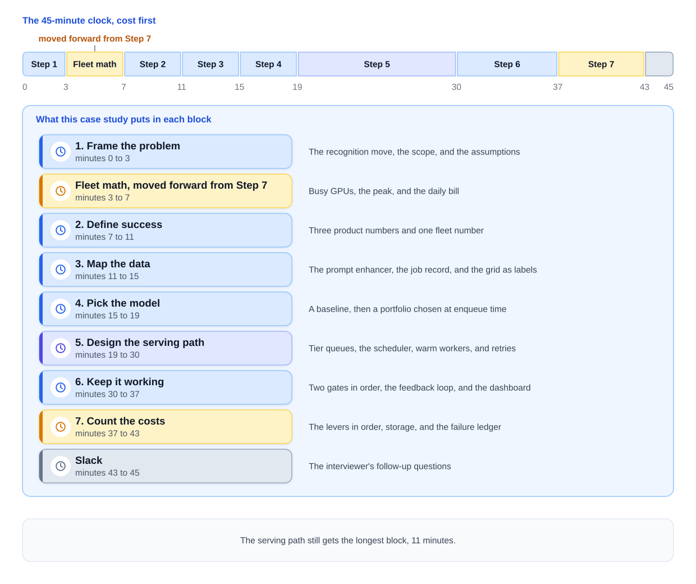
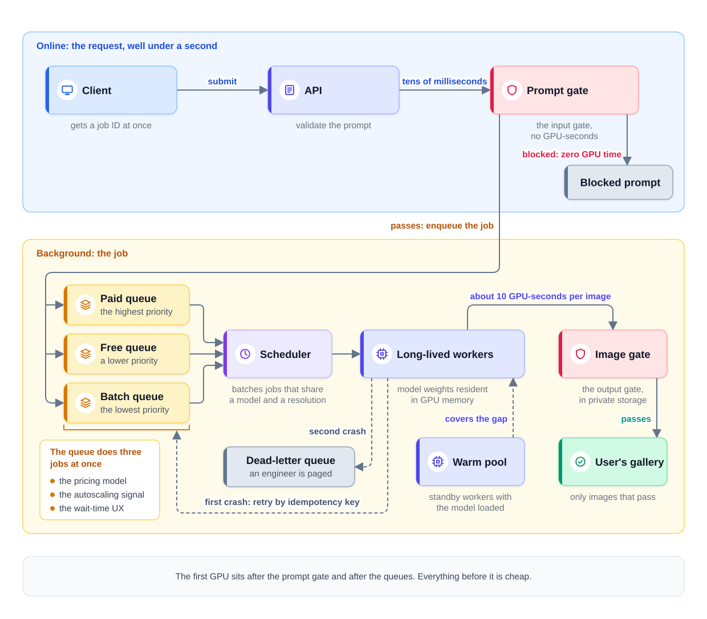
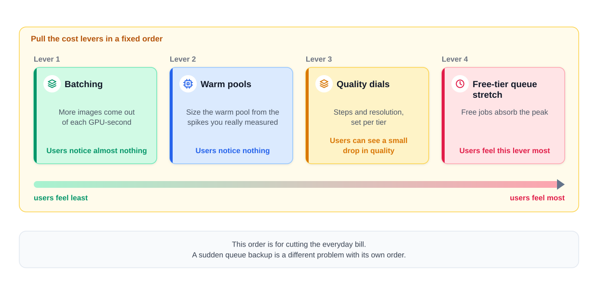

0% completed
System Design of a Text-to-Image Product at Scale
On This Page
Know the Vocabulary
The Question
Part 1: The Recognition Move
Name the Known System
What Changes: Cost Moves to the Start
Part 2: Frame the Problem (minutes 0 to 3)
Part 3: Price the Fleet First (minutes 3 to 7)
What the Number Means
Part 4: Define Success (minutes 7 to 11)
Three Product Numbers
One Fleet Number
Part 5: Map the Data (minutes 11 to 15)
A Short Line In
A Rich Record Out
The Grid Is a Free Label Machine
Part 6: Pick the Model (minutes 15 to 19)
Diffusion in Two Sentences
The Baseline
The Model Portfolio
One Decision at Enqueue Time
Part 7: Design the Serving Path (minutes 19 to 30)
Check Before You Spend
Priority Queues Are the Product's Economics
Set the Free Promise From Leftover Capacity
The Scheduler Is Where Utilization Is Achieved
Long-Lived Workers
When a Worker Crashes
Every Arrow, Priced
Part 8: Keep It Working (minutes 30 to 37)
Two Gates, in This Order
A Gate Outage Stops Only Its Lane
The Feedback Loop
The Fleet Dashboard
Part 9: Count the Costs (minutes 37 to 43)
The Levers, in Order
Storage
The Failure Ledger
Part 10: The Interviewer's Follow-Ups
Part 11: What Each Level Sounds Like
Part 12: Variations to Practice
Common Mistakes
Mistake 1: Leaving Cost to the End
Mistake 2: Pricing Only the Busy GPUs
Mistake 3: Cutting Quality First
Mistake 4: Checking Only the Prompt
Mistake 5: One Model for Everyone
FAQs
Key Takeaways
Check Your Understanding
Know the Vocabulary
This lesson uses the terms below many times. Read them once now, and come back here when a later section needs one.
- Text-to-image product: A product where a user types a short text, called a prompt, and gets back images that match it.
- Diffusion model: The kind of model most image products use. It starts from random visual noise and cleans it up over many denoising steps, until a picture appears.
- Denoising step: One pass of the diffusion model over the picture, which removes some of the noise. More steps usually give a better image, and they always cost more GPU time.
- GPU-second: One graphics processor (GPU) busy for one second. This lesson prices every image in GPU-seconds.
- Fleet: The whole set of GPU machines the product runs on. The company pays for every GPU in it, every hour.
- Job: One unit of background work, such as making four images for one prompt. The user gets a job ID at once and the images later.
- Tier: A level of service that decides how soon a job runs. In this design there are three tiers: paid, free, and batch.
- Worker: A long-running program on a GPU machine that takes jobs from a queue and runs them.
- Scheduler: The part of the system that decides which worker runs which job, and in what order.
- Warm pool: Standby workers that already have the model loaded, so they can start work within seconds.
- Utilization: The share of the fleet's paid GPU time that does useful work.
- p90 (the 90th percentile): The time that 9 of every 10 jobs beat, so only the slowest 1 in 10 take longer.
- Prompt enhancer: A small language model that rewrites a short prompt into a detailed one before the image model runs.
- Seed: A number that decides the starting noise. The same seed, prompt, model, and settings give the same image, or a very close one.
- Upscaler: A model that makes a finished image larger and sharper.
- Idempotency key: A unique ID for one job. If the job runs twice, the key makes sure only one result is kept and only one charge is made.
- Dead-letter queue: A separate queue for jobs that keep failing, where they wait for a person instead of retrying forever.
- Fail closed and fail open: When a check cannot run, failing closed blocks the work, and failing open lets the work through unchecked.
The Question
This lesson is a timed interview, so read the interviewer's question below and then stop.
"We run an image generator. A user types a prompt and gets a grid of four images. We make about 2 million images a day, for free users and for paid users. Our GPU bill is now our largest cost, and it keeps growing. Design the system. I care about the bill."
Stop here. Set a 45-minute timer and run your own answer, out loud, before you read on. Draw as you would on a whiteboard, and say each exit criterion before you move to the next step. How to Run a Case Study explains the clock and the exit criteria.
The walkthrough below is one strong answer. Every number in it is an illustrative assumption, not a price quote or a measured result.
Part 1: The Recognition Move
Name the Known System
The product makes content, so it belongs to the generative family. The closest known system is Design a Text-to-Image Service, and its shape is an asynchronous job pipeline. Asynchronous means the work finishes after the request that started it has already returned.
Why that shape? Each image needs about 10 GPU-seconds, and each prompt asks for four. That is too long for request-response, where the user's request waits on one open connection for the answer. So the request creates a job and returns a job ID at once, and a worker does the slow work in the background.
Say the recognition move in one sentence:
"This is the image job queue from the text-to-image design. What changes is the priority: you care about the bill, so I will put cost first."
What Changes: Cost Moves to the Start
On the default clock, cost comes last, in Step 7, from minute 38 to minute 43. In this question, two facts move it to the start of the clock.
- The interviewer named it. The sentence "I care about the bill" tells you what will be graded most, and a stated priority moves its step forward.
- The design centers on fleet economics. Every main choice in this design changes the GPU bill, including the queues, the models, the tiers, and the workers.
So the fleet math moves to minutes 3 to 7, and every later choice is judged against that number. Step 7 still closes the answer, but it now holds the levers that shrink the bill, not the first estimate.
Move the minutes on purpose, and say so out loud:
"Cost decides this design, so I'll price the fleet in the first few minutes."
That sentence tells the interviewer that the change is part of a plan. The table below shows this case study's clock.
| Minutes | Step | What this case study puts there |
|---|---|---|
| 0 to 3 | 1. Frame the problem | The recognition move, the scope, and the assumptions |
| 3 to 7 | Fleet math, moved forward from Step 7 | Busy GPUs, the peak, and the daily bill |
| 7 to 11 | 2. Define success | Three product numbers and one fleet number |
| 11 to 15 | 3. Map the data | The prompt enhancer, the job record, and the grid as labels |
| 15 to 19 | 4. Pick the model | A baseline, then a portfolio chosen at enqueue time |
| 19 to 30 | 5. Design the serving path | Tier queues, the scheduler, warm workers, and retries |
| 30 to 37 | 6. Keep it working | Two gates in order, the feedback loop, and the dashboard |
| 37 to 43 | 7. Count the costs | The levers in order, storage, and the failure ledger |
| 43 to 45 | Slack | The interviewer's follow-up questions |
The diagram below shows the same clock as a timeline.

Notice that the serving path still gets the longest block, 11 minutes, which is only one minute less than on the default clock. Steps 2 to 6 each give up one minute. Four of those minutes pay for the fleet math, and the fifth goes to Step 7 for the levers.
Part 2: Frame the Problem (minutes 0 to 3)
Start with the scope, and say what is in, what is out, and why.
- In scope: image generation from text, and simple variations. A variation is a new set of images based on one image the user chose.
- Out of scope: editing and inpainting, and video. Inpainting means regenerating one marked part of an existing image while the rest stays the same.
Editing and inpainting need different inputs: an existing image and a mask that marks the area to change. Video costs far more GPU time per job. Naming both out loud lets the interviewer pull one back in if they want it.
Then state the assumptions as numbers.
- Volume: about 2 million images a day.
- Grid: four images per prompt, so about 500,000 jobs a day.
- Cost per image: about 10 GPU-seconds on average, across all tiers.
- Users: about 80 percent of images come from free users, and paid users pay a monthly fee.
Exit criterion: "This is the image job queue, cost first. Generation and variations are in scope, and editing, inpainting, and video are out. Does that match what you want?"
Part 3: Price the Fleet First (minutes 3 to 7)
Run the math out loud, one step at a time. Back of the Envelope Math for AI Systems teaches the same method.
Step 1: Images per second. A day has 86,400 seconds, so 2 million images a day is about 23 images per second. Round it to 25 to keep the math easy.
Step 2: Busy GPUs. Each image needs about 10 GPU-seconds, so 25 images per second times 10 GPU-seconds is 250. About 250 GPUs are busy at every moment, on average. The exact figure is closer to 230, and rounding up keeps a small margin.
Step 3: The peak. Traffic is not flat across the day, so assume the busiest hour runs at twice the average. Then the fleet needs about 500 busy GPUs at peak.
Step 4: The bill. Assume
These are assumed rates and loads, so benchmark the model on real hardware before you size a real fleet.
What the Number Means
Look at the gap between the two bills. A fully busy fleet would cost
A GPU costs the same per hour whether it is busy or idle. So every idle GPU-second is money spent for nothing, and much of this design exists to shrink that gap.
Notice that this number is now on the board at minute 7. From here on, every new box gets one question: does it raise the bill or lower it?
Exit criterion: "About 250 GPUs are busy on average and about 500 at peak. The fleet we pay for costs roughly
Part 4: Define Success (minutes 7 to 11)
Three Product Numbers
Say these three numbers as a set, because each one alone can mislead.
- Images kept per session. A kept image is one the user saves, downloads, or upscales, and a session is one visit to the product. This number shows whether GPU time turned into something the user wanted. A user who regenerates ten times before keeping one image cost ten jobs for one result. This is the same selection signal as the pick-or-upscale share in Design a Text-to-Image Service. That lesson counts it per job, and this one counts it per session.
- Wait time by tier. This is the time from submit until a worker starts the job, measured separately for each tier. The model sets the generation time, but the tier buys the wait. For example, paid jobs land on a GPU within seconds at p90, and free jobs land within about a minute. These are example targets, not guarantees.
- Safety incident rate. This is the share of shown images that broke policy. It is a first-class number, because a harmful image can be shared within seconds. Most incidents are never reported, so teams estimate the rate from user reports and from reviewed samples of shown images.
Why not count images generated? That number grows with the bill. A product can make more images and give users less, for example when bad grids cause more regenerations.
One Fleet Number
Utilization is the metric that is actually the business. An idle GPU-second costs the same as a busy one, but it produces nothing. At this scale, each point of idle time costs hundreds of dollars a day, and ten points cost thousands.
That does not mean aiming for 100 percent, because a full fleet has no room for a spike and waits jump. Inference Economics gives a common target of about 60 to 80 percent at peak, and the rest is headroom.
Exit criterion: "Success is images kept per session, wait time by tier, and the safety incident rate. Utilization is the fleet number that decides the bill."
Part 5: Map the Data (minutes 11 to 15)
A Short Line In
At request time, the system knows very little. For example, the user typed "a cat in space" and nothing more. A good image needs much more than that: a style, the lighting, a viewpoint, and a scene.
A short prompt is a poor design input, and that fact shapes the design. The prompt enhancer rewrites terse prompts into rich ones before the image model runs. "A cat in space" might become "a gray cat in a small astronaut helmet, floating near a space station, soft blue light, digital painting."
The enhancer must keep the user's meaning, and many products let users turn it off. Its output also passes the prompt gate again, because the rewrite can add words the user never typed.
The enhancer is a cost tool as well. A detailed prompt makes a good grid more likely on the first try, and each regeneration it prevents saves a full job of four images.
A Rich Record Out
Every job stores a record that holds the prompt, the enhanced prompt, the model version, the seed, and the scores from both safety gates. It also holds the settings, such as the steps and the resolution, and the GPU-seconds the job used.
Each field has a reason.
- The seed and the model version make the job replayable. The same seed, prompt, model, and settings give the same image, or a very close one. Store the software versions too, because small differences in software or hardware can change a few pixels.
- The two gate scores support incident work. When a harmful image gets through, the team replays the job and sees which gate scored it too low.
- The GPU-seconds support the bill. Summed by tier and by surface, they show exactly where the money goes.
Prompts can be personal, so protect the records with access controls and a clear retention period.
The Grid Is a Free Label Machine
Showing four images for one prompt gives the user a choice. It also gives the team a comparison on every job, without asking anyone. The user's actions log themselves:
- A pick: the user opens or saves one image, so that image won against the other three.
- An upscale: the user asks for a larger version, which is a stronger vote than a pick.
- A regeneration: the user asks for four new images, because none of the four was good enough.
- An abandon: the user leaves without picking anything, so the job gave that user nothing.
No labeling budget is spent, and millions of these comparisons arrive every day. That is why the grid can be called a free label machine.
The labels are noisy, though. Users may pick the top-left image more often only because it comes first. That is position bias, and shuffling the order of the four images helps measure it. A pick also says nothing about safety, so it never replaces the gates.
Exit criterion: "Prompts arrive short, so an enhancer rewrites them. Every job keeps a replayable record with its cost, and the grid gives free preference labels."
Part 6: Pick the Model (minutes 15 to 19)
Diffusion in Two Sentences
A text encoder turns the prompt into conditioning, a list of numbers that says what the image should contain. The diffusion model starts from random visual noise and cleans it up over many denoising steps, moving toward the conditioning each time.
That is enough model detail for this interview, and it leads to the one fact the bill depends on. The cost of an image grows with the number of steps and with the resolution. More steps mean more passes, and more pixels mean more work in each pass.
The Baseline
The simplest working system uses one pretrained image model, with the same settings for everyone. It is easy to run and easy to measure. It also gives every later change a number to beat on images kept, cost, and safety.
The Model Portfolio
The baseline spends the same GPU time on a free preview as on a paid final image. A real product uses a portfolio of four models instead.
| Model | Job | When it runs |
|---|---|---|
| Flagship model | Best quality, at the highest cost per image | Paid jobs by default |
| Fast low-step model | Fewer denoising steps, so a lower cost | Free jobs and quick previews |
| Upscaler | Makes a chosen image larger and sharper | Only on images users pick |
| Prompt enhancer | Rewrites terse prompts into rich ones | Before generation, on most jobs |
Notice where the upscaler runs. Large images cost more, so the product makes small images first and enlarges only the ones users choose.
One Decision at Enqueue Time
Two things decide which models a job gets: the user's tier and the product surface. A product surface is the place the request came from, such as the web app, the mobile app, or the public API.
The system decides both together, once, at enqueue time, which is the moment it puts the job in a queue. Deciding once has three benefits.
- The job enters the right queue. Each queue feeds workers that already hold the right model.
- The price is known before any GPU work. The job's cost is fixed by its model and settings.
- The scheduler can batch jobs. Jobs that share a model and a resolution can run together on one GPU.
Exit criterion: "The baseline is one model for everyone. The portfolio is a flagship model, a fast low-step model, an upscaler, and the prompt enhancer, chosen by tier and surface at enqueue time. I would add a new flagship only if users keep more of its images, at a cost its tier can carry."
Part 7: Design the Serving Path (minutes 19 to 30)
Check Before You Spend
The API does four things before any GPU work begins.
- Validate the prompt. Check its length, its format, and the user's daily limit.
- Run the prompt gate. A classifier is a small model that scores input for one category of harm, such as violence. Classifiers score the prompt before the job is queued.
- Enqueue the job. Put it in the queue for its tier, with its models already chosen.
- Return a job ID. The client uses it to follow the job.
The order is a cost decision. The prompt gate runs before enqueue, so a blocked prompt never reaches a GPU and costs zero GPU time. The gate has its own small cost, but it is far cheaper than a wasted generation.
The diagram below shows the serving path, with the two gates and the three tier queues.

Notice that the first GPU in the picture sits after the prompt gate and after the queues. Everything before it is cheap.
Priority Queues Are the Product's Economics
The system keeps one queue per tier.
- Paid: the highest priority, so paid jobs start first.
- Free: a lower priority, so free users absorb busy times as a longer wait.
- Batch: the lowest priority. It holds large jobs from API customers, sold cheaply with no wait promise. They run when GPUs would otherwise sit idle, such as at night.
The queue does three jobs at once, and you should say all three in the interview.
- It is the pricing model. What a paid user buys is a shorter wait, so the queue order is the price list.
- It is the autoscaling signal. A queue that keeps growing tells the fleet to add workers.
- It is the wait-time UX. UX means user experience, or what the user sees. The client turns the queue depth into an honest estimate, such as a wait of about 40 seconds. An honest estimate keeps users who would leave a silent spinner.
One mechanism does the work of three, which is why the priority queues are the product's economics.
Set the Free Promise From Leftover Capacity
The paid tier is served first. So the free tier's promise cannot be a number someone picks for marketing, and it must come from the capacity that is left.
Step 1: Serve paid first. Measure the paid load at peak. For example, suppose the peak fleet holds about 650 GPUs, which leaves headroom above the 500 busy ones. That is about 77 percent utilization at peak. Suppose paid jobs need about 180 of them.
Step 2: Find what is left. The free tier gets the remaining capacity, which is about 470 GPUs in this example. Free jobs keep about 320 of them busy at peak, so some room is left for bursts.
Step 3: Compute the free p90. Measure or simulate how long free jobs wait at p90 with that capacity. Suppose the answer is about 45 seconds.
Step 4: Add a margin. Promise a little more than the computed number, such as about a minute. The margin covers a bad hour without breaking the promise.
Notice the link this creates. If paid users grow, the leftover shrinks, and the free promise must change too. A pricing change is a capacity change.
The Scheduler Is Where Utilization Is Achieved
Utilization is a number on a dashboard, but the scheduler is where it is won or lost. Three of its choices matter most.
- Batch similar jobs. Jobs that share a model and a resolution run together on one GPU, which makes more images per GPU-second than single jobs do.
- Keep each worker on one model. A worker that switches models must load new weights. Weights are the model's learned numbers, and they can be many gigabytes.
- Fill idle time with batch jobs. When the paid and free queues are short, batch jobs keep the GPUs busy.
Long-Lived Workers
Loading a large image model onto a GPU takes tens of seconds. If each job loaded the model, every job would waste that time. So workers are long-lived, and each one keeps its model weights resident in GPU memory, job after job.
A brand-new worker is slower still, because the machine must boot before the weights can load. A cold GPU can arrive minutes after the spike that called for it.
So the autoscaler watches the trend in queue depth, not the number at one instant. A queue that has grown for several minutes needs more workers. A warm pool covers the gap while cold workers start up behind it.
When a Worker Crashes
Workers crash, machines are lost, and some prompts trigger bugs. Two rules keep a failure small.
A first crash means a retry. The job returns to the queue and runs on a fresh worker. Results and billing are recorded under the job's idempotency key, and only once. So the retry never creates a second set of images, and the user is never charged twice. The GPU work may run twice, but the user sees one result.
A second crash means the job is parked. A job that crashes two workers is probably a poison job, one that will crash every worker that runs it. It moves to the dead-letter queue, and an engineer is paged. The user gets a failure message and a refund of the credit. This is the rule from Model Serving Basics.
Every Arrow, Priced
The exit criterion for this step is about arrows, not boxes. The table gives each main arrow its time, its cost, and its failure behavior.
| Arrow | Time or cost | When it fails |
|---|---|---|
| Client to API | Returns a job ID in well under a second | The client retries with the same idempotency key |
| API to prompt gate | Tens of milliseconds, no GPU-seconds | The job is not queued, so the gate fails closed |
| Queue to worker | Seconds for paid, about a minute for free | Waits grow, and the autoscaler adds workers |
| Worker to image gate | About 10 GPU-seconds per image | A crash means a retry, and a second crash means the dead-letter queue |
| Image gate to the user's gallery | Small classifier cost per image | Images wait in private storage, so the gate fails closed |
Exit criterion: "Every arrow carries its time, its cost, and its failure behavior."
Part 8: Keep It Working (minutes 30 to 37)
Two Gates, in This Order
The design has two safety gates, and their order matters.
- The prompt gate comes first, and it saves GPU cost. It is the input gate, which checks the request before the model sees it. It reads the user's prompt before enqueue, and it reads the enhanced prompt again before generation. Because its first check runs before enqueue, every prompt it blocks there saves a full job.
- The image gate comes last, and it catches guilty images. It is the output gate, which checks the model's output before any user sees it. Classifiers check every image while it waits in private storage. They look for nudity, violence, and the likeness of real people.
The image gate is not a copy of the prompt gate, because an innocent-looking prompt can still produce a harmful image. The prompt gate reads only words, so it cannot see what the model actually drew.
So the cheap check runs early, where it saves the most money. The check that sees the pixels runs late, where the truth is finally visible. After both, each shipped image is also marked with a hidden watermark, so its source can be traced later. Safety and Guardrails explains input and output gates in more depth.
A Gate Outage Stops Only Its Lane
Both gates fail closed. A lane is the path of work that passes through one gate, and when a gate is down, only its lane stops.
Suppose the image gate goes down for ten minutes. Finished images wait in private storage, and users see a status that says the images are still processing. The prompt gate, the queues, and the workers keep running for a while, up to a set storage limit. When the gate returns, the waiting images are checked and released.
The system never fails open. A harmful image can be shared within seconds and cannot be taken back, so a short delay is the far smaller cost.
The Feedback Loop
Selection behavior from the grid mainly tunes the prompt enhancer. Some rewrites lead to picks and upscales, while others lead to regenerations and abandons. The team trains the enhancer toward the rewrites users prefer, for example weekly.
Before any user sees a change, test it offline. Run it on a fixed prompt set, a saved list of test prompts that stays the same between versions. Human reviewers rate the results, and the red-team suite checks that the gates still catch known attacks.
The same selection signal then judges a new image model online. Run the new model on a small share of traffic, and compare images kept per session with the current model on similar prompts. Taste varies, so human review panels check quality too. Online Experiments and A/B Testing explains how to compare two versions on real users.
The gates change on their own schedule. Their thresholds usually tighten after a miss or a red-team find, and they rarely loosen. A red team is a group whose job is to attack the system on purpose. Each tightening blocks some good prompts, so the team also tracks the false-block rate.
The Fleet Dashboard
One dashboard matters most to the business. It shows queue depth per tier, utilization, and the promised wait against the actual wait. That last pair shows whether the queue keeps its promise.
Exit criterion: "Offline, a fixed prompt set with human review and a red-team suite check each change. Online, images kept per session decides. The enhancer retrains on selection data, for example weekly."
Part 9: Count the Costs (minutes 37 to 43)
Part 3 already priced the fleet, so this step closes the answer with two ledgers. One lists the levers that shrink the bill, and the other lists the failures with their responses.
The Levers, in Order
Pull the cost levers in a fixed order, from the two levers users barely notice to the one they feel most.
Lever 1: Batching. Group jobs that share a model and a resolution, and run them together on one GPU. More images come out of each GPU-second. Users notice almost nothing, though a batch can add a little time to each job.
Lever 2: Warm pools. Size the warm pool from the spikes you really measured, not from a guess. Let standby workers run batch-tier jobs while they wait, and pause those jobs when a spike arrives. Idle standby time shrinks, and users notice nothing.
Lever 3: Quality dials. Steps and resolution are settings on each job, so set them per tier. For example, suppose a free image costs about 8 GPU-seconds, a little under the 10 GPU-second average across all tiers. With half the steps at a lower resolution, it might cost about 3 GPU-seconds. Users can see a small drop in quality, so check that images kept per session holds.
Lever 4: Free-tier queue stretch. Let the free tier's wait promise grow at peak, for example from about one minute to a few minutes. Free jobs then absorb the peak, so the fleet can be sized closer to the average. Users feel this lever most, and it can cost signups, so it comes last.
The diagram below shows the four levers, from the least visible to the most visible.

This order is for cutting the everyday bill. A sudden queue backup is a different problem with its own order, which Design a Text-to-Image Service gives.
Storage
GPUs are the largest cost, but not the only one. Each prompt stores four images, and most are never kept. Lifecycle rules move or delete data by its age and its use.
- Picked images stay in a hot gallery, which is fast storage the user can open at once.
- After a month, picked images move to cold storage, which is cheaper but slower to read.
- Unpicked grid images expire after a set window, such as two weeks.
Small previews are served from the content delivery network (CDN), a set of servers that delivers files close to users. The CDN also charges for the data it sends.
The Failure Ledger
Three failures matter most, and each one has a response.
- A worker dies. The job retries on a fresh worker, and the idempotency key prevents a second image set or a second charge. A second crash parks the job in the dead-letter queue and pages an engineer.
- A gate goes down. Only that lane stops, and the system never fails open.
- The free queue backs up. Lower the free tier's quality dials, show honest wait estimates, and pause batch jobs. Add capacity if the queue still grows.
Exit criterion: "The bill shrinks in this order: batching, warm pools, quality dials, then free-tier queue stretch. Storage follows lifecycle rules. A dead worker means a retry, and a gate outage stops only its lane."
Part 10: The Interviewer's Follow-Ups
These questions often arrive in the slack minutes, or in the middle of a step. Answer each one out loud before you read the answer below it.
1. "The free tier is 80 percent of our volume and 0 percent of our revenue. What do you do?"
Do not remove the free tier, because it is how most users find the product and later pay. Shrink its cost in three ordered moves.
- Halve the free tier's steps. This is a quality dial, so check that images kept per session holds for free users.
- Shift free generations to batch. Offer free users a "deliver later" option that runs in the batch tier, on GPUs that would otherwise sit idle. The fleet does not grow for those jobs.
- Cap daily free generations. A daily limit bounds the cost of the heaviest free users.
Put a number on it. Suppose free images average about 8 GPU-seconds. Then 1.6 million free images use about 12.8 million of the 20 million GPU-seconds each day. Halving their steps saves roughly a third of all GPU time.
2. "A new model doubles quality and triples GPU-seconds. Do you launch it fleet-wide?"
No. Tripling the GPU-seconds on every image would roughly triple the fleet, from about 250 busy GPUs to about 750. Launch it as a tier instead, such as a premium paid option. Then test the quality claim with selection behavior data. Compare images kept per session and upscale rates against the current model on similar prompts, with human panels beside them. Widen it only if users really keep more of its images.
3. "Celebrity likenesses keep appearing in images, but the prompts never name anyone. Where is the fix?"
The fix belongs at the output gate, because the prompt gate cannot catch what the prompt never says. Strengthen the likeness classifier in the image gate, and lower its threshold for that category. The threshold is the score at which an image is blocked, so a lower one blocks more. Then use the job records to replay the cases. If the enhancer added the names, the check on the enhanced prompt needs fixing too. Add the cases to the red-team suite, so every future change must catch them.
4. "Storage costs are creeping toward the GPU bill. What do you change?"
Start with the size. At an assumed 2 megabytes per image, 2 million images is about 4 terabytes a day, and most of it is unpicked grid images. Apply the lifecycle rules: a hot gallery for picks, cold storage after a month, and an expiry window for unpicked grid images. Then confirm that the CDN serves small previews, not full-size files.
Part 11: What Each Level Sounds Like
The same question can earn three different grades.
Mid-level. "I'd use an async queue with GPU workers and autoscaling. I'd add a moderation check, and GPUs are expensive, so I'd optimize later."
Every part is right, but the bill never gets a number. Cost appears at minute 40 as a single sentence, even though the interviewer asked for it.
Senior. A senior answer prices the fleet by minute 7. It finds about 250 busy GPUs on average, about 500 at peak, and roughly
Staff. A staff answer does all of that, and it reframes the problem in one line: "The fleet bill is the product's margin, so pricing and architecture are one design."
Then it shows why. Paid users buy queue position, so the queue order is the price list. The free promise comes from leftover capacity, so a pricing change is a capacity change. A new model becomes a new tier with its own price, not a fleet-wide upgrade.
Notice that the staff answer adds almost no new boxes. It adds the link between the boxes and the business.
Part 12: Variations to Practice
Run one of these a few days later, on a fresh 45-minute clock.
Variation 1: Video generation for the same product.
What changes: a job now costs minutes of GPU time, not seconds. Long jobs are harder to batch, so the scheduler matters even more. The image gate must check the frames and how they change over time, and storage and CDN costs grow much faster.
Variation 2: A product-photo generator for online stores, sold through an API.
What changes: most jobs are large and can wait, so the batch tier becomes the main tier. The product's label and shape must not change. So the design keeps the product's pixels fixed and generates only the background.
Variation 3: The same product with a paid tier only, and a written wait promise for business customers.
What changes: no free tier absorbs the peak. The fleet must hold real headroom for the peak, and the warm pool becomes a cost of the contract, not a choice.
Common Mistakes
Mistake 1: Leaving Cost to the End
The interviewer named the bill as the priority. An answer that prices the fleet at minute 40 ignored the one priority that was stated. Move the fleet math forward, and say that you are doing it.
Mistake 2: Pricing Only the Busy GPUs
About 250 busy GPUs is the floor, not the bill. Headroom, the peak, and the warm pool raise the fleet you pay for. Name the gap, because idle time is where most savings come from.
Mistake 3: Cutting Quality First
Lowering the steps is easy to say, but users see it. Batching and warm-pool sizing cost users nothing, so pull them first and stretch the free queue last.
Mistake 4: Checking Only the Prompt
A prompt gate alone misses harmful images made from innocent prompts. Check every image at the output gate before any user sees it.
Mistake 5: One Model for Everyone
A single model with fixed settings spends flagship GPU time on free previews. Use a portfolio instead, chosen by tier and surface at enqueue time.
FAQs
Q: Should cost always come first in a case study?
No. It moves forward when the interviewer names it as the priority, or when the design centers on it. In most case studies, cost stays in Step 7.
Q: Is images generated per day a good success metric?
No. It grows with the bill, not with value. Images kept per session shows whether the GPU time gave users something they wanted.
Q: Should the fleet aim for 100 percent utilization?
No. A full fleet has no room for spikes or failed machines, so waits jump. A common target is about 60 to 80 percent at peak.
Q: Can the free tier have the same wait promise as the paid tier?
No. Paid jobs are served first, so free jobs get the leftover capacity. The free promise is computed from that leftover, with a margin.
Q: Does the prompt enhancer add cost?
Yes, but only a little. It is a small language model, so it costs far less than an image job. When it prevents a regeneration, it saves a full grid of four images.
Key Takeaways
- A stated priority moves its step. The sentence "I care about the bill" moves the fleet math to minutes 3 to 7, and every later choice is judged against it.
- The known system is the asynchronous job pipeline. About 10 GPU-seconds per image, four per prompt, is too long for request-response.
- The fleet math anchors the answer. Two million images a day keep about 250 GPUs busy on average and about 500 at peak. The fleet costs roughly
45,000 a day. - Success is three product numbers and one fleet number. Say images kept per session, wait time by tier, and safety incident rate together. Utilization is the metric that is actually the business.
- The queue does three jobs. It is the pricing model, the autoscaling signal, and the wait-time UX, and the free promise comes from leftover capacity.
- The gates are ordered for cost and safety. The prompt gate saves GPU time before enqueue, the image gate catches guilty images before display, and both fail closed.
- Cost levers have an order. Pull batching first, then warm pools, then quality dials, and then free-tier queue stretch.
- In a system design interview, say why cost moves forward, and price the fleet by minute 7. Then tie every box to the bill, and close with the levers in order and the failure ledger.
The next lesson, System Design of an Autonomous Coding Agent, moves from content to actions. Run it on the clock, out loud, before you read the walkthrough.
Check Your Understanding
1. Why does this case study price the fleet at minute 3 instead of minute 38?
Show answer
Because the interviewer named the bill as the priority, and the design centers on fleet economics. A stated priority moves its step forward. With the fleet price on the board early, every later choice can be judged by whether it raises or lowers the bill.
2. A teammate says the prompt check should run on the worker, just before generation. What does that cost?
Show answer
It makes blocked prompts expensive. When the prompt gate runs before enqueue, a blocked prompt never reaches a GPU and costs zero GPU time. On the worker, each blocked prompt would wait in a queue and take a GPU worker's turn for nothing.
3. The paid tier grows quickly. Why must the free tier's wait promise be checked again?
Show answer
Because the free promise comes from leftover capacity. Paid jobs are served first, so when paid load grows, less capacity is left for free jobs and the free p90 rises. The team recomputes it and adds a margin, or adds capacity.
4. The team must cut the bill by a third. Which lever comes first, and which comes last?
Show answer
Batching comes first, and free-tier queue stretch comes last. The order runs from the levers users barely notice to the one they feel most. It goes batching, warm pools, quality dials, and then free-tier queue stretch.
0 Comments
No comments yet. Be the first to start the discussion!
Reading Progress
0%
On This Page
Know the Vocabulary
The Question
Part 1: The Recognition Move
Name the Known System
What Changes: Cost Moves to the Start
Part 2: Frame the Problem (minutes 0 to 3)
Part 3: Price the Fleet First (minutes 3 to 7)
What the Number Means
Part 4: Define Success (minutes 7 to 11)
Three Product Numbers
One Fleet Number
Part 5: Map the Data (minutes 11 to 15)
A Short Line In
A Rich Record Out
The Grid Is a Free Label Machine
Part 6: Pick the Model (minutes 15 to 19)
Diffusion in Two Sentences
The Baseline
The Model Portfolio
One Decision at Enqueue Time
Part 7: Design the Serving Path (minutes 19 to 30)
Check Before You Spend
Priority Queues Are the Product's Economics
Set the Free Promise From Leftover Capacity
The Scheduler Is Where Utilization Is Achieved
Long-Lived Workers
When a Worker Crashes
Every Arrow, Priced
Part 8: Keep It Working (minutes 30 to 37)
Two Gates, in This Order
A Gate Outage Stops Only Its Lane
The Feedback Loop
The Fleet Dashboard
Part 9: Count the Costs (minutes 37 to 43)
The Levers, in Order
Storage
The Failure Ledger
Part 10: The Interviewer's Follow-Ups
Part 11: What Each Level Sounds Like
Part 12: Variations to Practice
Common Mistakes
Mistake 1: Leaving Cost to the End
Mistake 2: Pricing Only the Busy GPUs
Mistake 3: Cutting Quality First
Mistake 4: Checking Only the Prompt
Mistake 5: One Model for Everyone
FAQs
Key Takeaways
Check Your Understanding